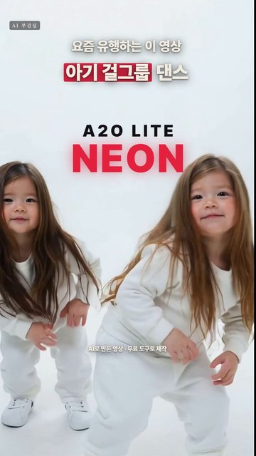

아기 둘이 하얀 스튜디오에서 걸그룹 안무를 추는 15초 영상을, 힉스필드 없이 무료 AI 두 개로 만들었습니다. 생성 비용은 0원입니다.
① 춤 영상을 장면이 바뀌는 곳마다 자르기 ② 사진 AI로 컷마다 첫 장면을 아기 버전으로 바꾸기(아기가 몇 명인지 꼭 적기 — 안 적으면 아기가 늘어남) ③ 영상 AI에 그 컷의 춤 영상과 ②의 사진을 같이 넣고 다시 그리기(다시 그리는 강도 0.9) ④ 멀리서 찍은 컷은 사람이 크게 보이게 잘라서 넣기(작게 보이면 춤을 안 따라 함) ⑤ 0.5초 안팎의 빠른 컷은 사진에 살짝 확대만 ⑥ 컷을 이어 붙이고 춤 영상 소리를 그대로 붙이면 박자가 맞음 팁: 춤 영상은 쓸 길이보다 8프레임 이상 길게 넣고, 모자란 끝은 멈춘 화면 대신 거꾸로 재생으로 채우세요(끝 부분이 엉뚱한 장면으로 무너지는 것을 막음). 거의 서 있기만 하는 컷은 사진에서 살짝만 움직이는 편이 깔끔합니다. 저희 PC 실측(그래픽카드 8GB): 사진 장당 약 10초, 2초 컷 약 50초, 6.5초 컷 약 2분, 전체 약 20분 사진 AI = FLUX.2 klein 4B, 영상 AI = LTX-2.5(영상을 넣어 영상으로 다시 그리기), 둘 다 내 PC에서 무료
Turn the two dancers in image 1 into two adorable chubby toddlers about two years old with real baby proportions: big round head, chubby cheeks, short arms and short legs. Exactly 2 toddlers in the picture and no other people. Each toddler does exactly the same pose at exactly the same position in the frame as the dancer it replaces, and is drawn just as big: the toddler fills the same area from the top of the head to the feet as that dancer (as if the camera were closer), keeping the same layout. They wear tiny white full-length sweatshirts that fully cover the belly, white baggy pants and white sneakers. Like the two dancers, one toddler has long straight black hair and the other has long light-brown hair (soft baby hair down to the shoulders). Keep exactly the same plain white studio background, camera angle, framing and soft lighting as image 1. Photorealistic photo, natural skin, sharp focus. No text.
Medium wide shot: two toddlers dance a K-pop choreography together in the bright white studio, full bodies with feet visible, stepping, kicking, turning and swinging their arms. Adorable chubby toddlers about two years old with real baby proportions (big round heads, short arms and short legs), tiny white sweatshirts that fully cover the belly, white baggy pants and white sneakers, one toddler with a tiny black top ponytail and one with a short light-brown bob. Bright plain white studio, soft even lighting, photorealistic footage, natural baby skin, smooth natural motion.
영상 속 아기는 AI로 만든 가상 인물입니다.